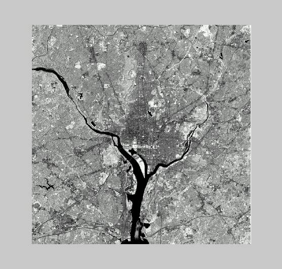
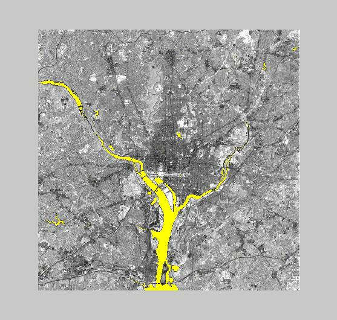

Pseudo-Color
Goal: To implement an algorithm that converts a range of gray-scale values of an image to color.
I implemented the algorithm in matlab. It works by checking the gray-scale values
against the specified range in each color plane and replacing the values that
fall within that range by red, green, or blue.
You can specify the gray-scale range and the RGB value to replace it. In some cases you may need to go some
fraction outside the desired range because I used floating point values to do
the arithmetic, and there may be floating point round off problems during the
range comparisons. For the test image
below, I chose the range -1 to 20 (inclusive) to convert the river to a yellow
color. It seems to have worked pretty
well. There are only a few small areas
outside the river that were converted to yellow. At the same time, the procedure appears to have done a nice job
of highlighting the river.
Fig. 2a and 2b below. Choosing a range of values for this image was easy because the river is located
completely at the darker end of the gray-scale spectrum.


Get
the code here.